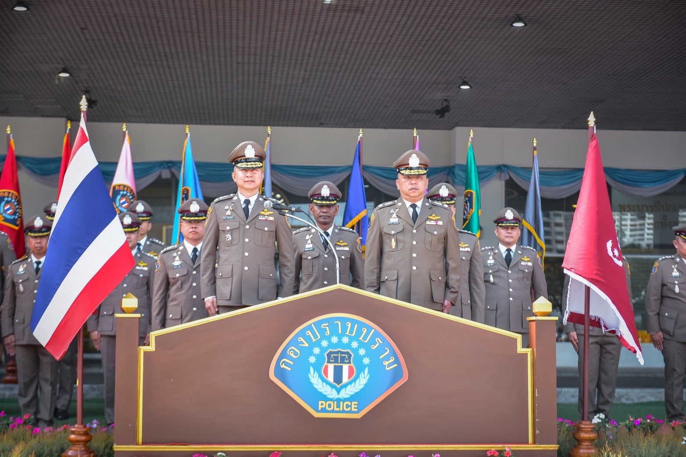
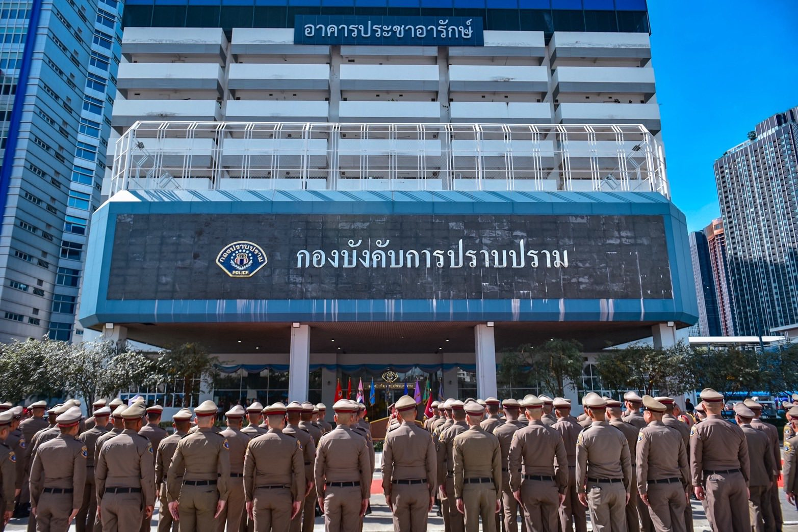

ประวัติความเป็นมา
หลังสงครามโลกครั้งที่ 2 สิ้นสุดลง ประเทศไทยเผชิญกับสภาวะอาชญากรรมที่พุ่งสูงขึ้นอย่างรวดเร็ว โจรผู้ร้ายชุกชุมและมีอาวุธสงครามไว้ในครอบครองจำนวนมาก ทำให้ตำรวจท้องที่ไม่สามารถรับมือได้อย่างมีประสิทธิภาพ
ด้วยเหตุนี้ ในวันที่ 1 กันยายน พ.ศ. 2491 (โดยมีผลบังคับใช้ตั้งแต่วันที่ประกาศในราชกิจจานุเบกษา 31 สิงหาคม พ.ศ. 2491) จึงถือเป็นวันสถาปนา “กองบังคับการปราบปราม” ขึ้นอย่างเป็นทางการ ภายใต้การนำของ พล.ต.อ.เผ่า ศรียานนท์ (อธิบดีกรมตำรวจในขณะนั้น)
เป้าหมายคือเพื่อสร้างหน่วยงานที่มีเขี้ยวเล็บ มีความคล่องตัวสูง และมีอำนาจสืบสวนสอบสวนครอบคลุมพื้นที่ทั่วราชอาณาจักร โดยไม่ต้องติดขัดเรื่องเขตอำนาจของจังหวัด ทำให้กองปราบฯ กลายเป็นที่พึ่งของประชาชนในคดีที่ซับซ้อนและเกี่ยวข้องกับผู้มีอิทธิพล
โครงสร้างและภารกิจหลัก
กองบังคับการปราบปราม สังกัด กองบัญชาการตำรวจสอบสวนกลาง (บช.ก.) ได้รับการยอมรับในฐานะหน่วยงานที่เป็น "ที่พึ่งสุดท้ายของประชาชน" โดยมีการแบ่งส่วนราชการออกเป็น กองกำกับการ 1 – 6, กองกำกับการสนับสนุน และฝ่ายอำนวยการ สิ่งที่ทำให้กองปราบฯ แตกต่างและโดดเด่น คือ:
- การปราบปรามผู้มีอิทธิพลและมือปืนรับจ้าง: งานหลักที่สร้างชื่อเสียงมาทุกยุคสมัย
- การทำลายล้างองค์กรอาชญากรรม: รับผิดชอบคดีที่มีเครือข่ายโยงใยหลายจังหวัด
- หน่วยปฏิบัติการพิเศษ: หรือ "ชุดหนุมาน" ที่มีขีดความสามารถในการจู่โจมและใช้อาวุธยุทโธปกรณ์ระดับสูง
กองกำกับการ 6 กองบังคับการปราบปราม : พยัคฆ์แดนใต้
การแบ่งส่วนราชการออกเป็น กองกำกับการ 1-6 มีวัตถุประสงค์เพื่อสร้างความเชี่ยวชาญเฉพาะถิ่น โดย กองกำกับการ 6 กองบังคับการปราบปราม (กก.6 บก.ป.) คือหน่วยงานที่รับภารกิจที่ท้าทายที่สุดเขตหนึ่งของประเทศ ด้วยนิยาม “เด็ดขาด รอบคอบ และทรหด”
พื้นที่รับผิดชอบ: ครอบคลุม ภาคใต้ตอนล่างพื้นที่ภาค 9
พื้นที่เหล่านี้มีลักษณะพิเศษทางภูมิศาสตร์และสังคมที่ต้องจับตามองเป็นพิเศษ:
- ปัญหาผู้มีอิทธิพลท้องถิ่น: ภาคใต้ขึ้นชื่อเรื่อง "เจ้าพ่อ" และกลุ่มอิทธิพลที่เกี่ยวพันกับธุรกิจสีเทา
- เส้นทางชายแดน: การลักลอบขนของหนีภาษี ยาเสพติด และการค้ามนุษย์ข้ามชาติ
- ความซับซ้อนของคดีความมั่นคง: กก.6 บก.ป. มุ่งเน้น "งานสืบสวนเชิงลึก" เพื่อตัดวงจรอาชญากรรมที่สนับสนุนความไม่สงบ
จาก พ.ศ. 2491 ถึงปัจจุบัน... ไม่ว่าเวลาจะผ่านไปนานเพียงใด
คำขวัญที่ว่า
“ที่พึ่งสุดท้ายที่หมายพึ่ง”
จะยังคงถูกสลักอยู่ในใจของเจ้าหน้าที่ กก.6 บก.ป. ทุกนาย

มุ่งมั่นปฏิบัติหน้าที่ด้วยความซื่อสัตย์สุจริตและเป็นธรรม
อำนาจหน้าที่
กองกำกับการ 6 กองบังคับการปราบปราม มีอำนาจหน้าที่ตามกฎหมายและนโยบาย ดังนี้:
- สืบสวนสอบสวน: ดำเนินการสืบสวนและสอบสวนคดีอาญาตามประมวลกฎหมายวิธีพิจารณาความอาญา ครอบคลุมทั่วราชอาณาจักร
- ปราบปรามอาชญากรรมร้ายแรง: ป้องกันและปราบปรามความผิดเกี่ยวกับชีวิต ร่างกาย และทรัพย์สิน
- ปราบปรามผู้มีอิทธิพล: กวาดล้างกลุ่มผู้มีอิทธิพล มือปืนรับจ้าง และองค์กรอาชญากรรม
- ความมั่นคงและอาวุธสงคราม: ตรวจสอบและจับกุมผู้กระทำผิดเกี่ยวกับการค้าหรือครอบครองอาวุธสงคราม
- ภารกิจพิเศษ: ปฏิบัติงานร่วมกับหรือสนับสนุนการปฏิบัติงานของหน่วยงานอื่นที่เกี่ยวข้อง หรือตามที่ได้รับมอบหมาย

กองกำกับการ 6 กองบังคับการปราบปราม กองบัญชาการตำรวจสอบสวนกลาง (CSD 6 CIB)
ผู้บังคับบัญชา
โครงสร้างการบังคับบัญชา กองกำกับการ 6 กองบังคับการปราบปราม
กำลังโหลดข้อมูล...
*ข้อมูลผู้บังคับบัญชาอาจมีการเปลี่ยนแปลงตามวาระการแต่งตั้ง